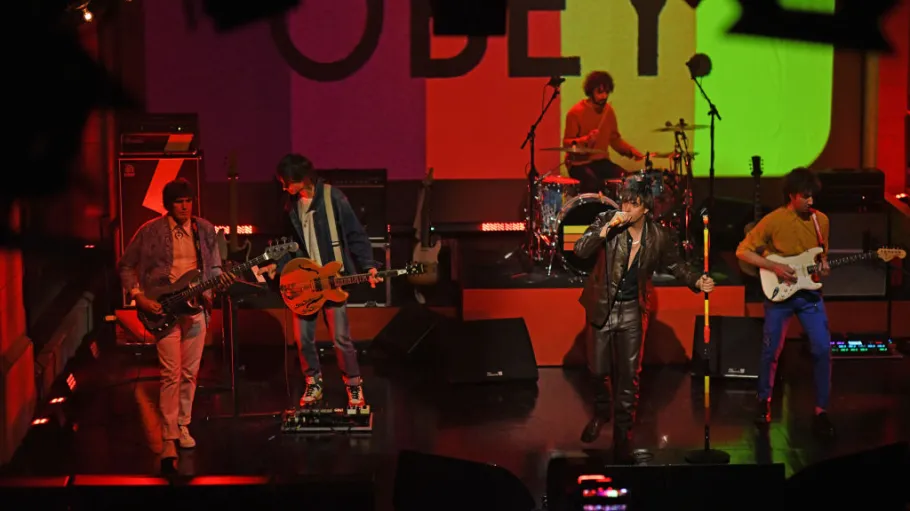

The Strokes are an American rock band formed in New York City in 1998. The band consists of Julian Casablancas (vocals), Nick Valensi (guitar), Albert Hammond Jr. (guitar), Nikolai Fraiture (bass), and Fab Moretti (drums).
Their debut album Is This It (2001) is widely regarded as one of the greatest rock albums ever made, and helped kick off the early 2000s indie rock revival.

The Strokes performing live.
Watch one of their most iconic live performances below:
One of my personal favourite Strokes songs "Ode to the Mets" — give it a listen, and if you love it you can download it too!
| Album | Year | Notable Song |
|---|---|---|
| Is This It | 2001 | Last Nite |
| Room on Fire | 2003 | 12:51 |
| First Impressions of Earth | 2006 | Juicebox |
| Angles | 2011 | Under Cover of Darkness |
| The New Abnormal | 2020 | Bad Decisions |
Want to know more about The Strokes?
Visit their Wikipedia pageAre you a Strokes fan? Register and join our community!
👉 Register here | 📄 About the Creator